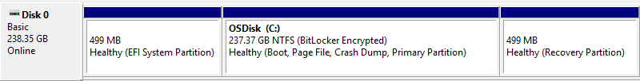

Gerenciamento de disco é um utilitário do sistema no Windows que permite executar tarefas avançadas de armazenamento. Aqui estão algumas boas utilidades do Gerenciamento de disco:
Configurar uma nova unidade;
Estender um volume para o espaço que não ainda faz parte de um volume na mesma unidade;
Reduzir uma partição, geralmente, para que você possa estender uma partição vizinha;
Alterar uma letra da unidade ou atribuir uma nova letra da unidade.
Seguem algumas tarefas comuns que você talvez queira executar, mas que usam outras ferramentas no Windows:
Para liberar espaço em disco;
Para desfragmentar as unidades;
Para selecionar vários discos rígidos e reuni-los em um pool, como em um RAID
Sobre essas partições de recuperação adicionais
Caso esteja curioso (lemos os seus comentários!), o Windows normalmente inclui três partições na unidade principal (normalmente a unidade C:\):

Partição de sistema EFI - Usada por PCs modernos para iniciar (boot) o PC e o sistema operacional.
Unidade do sistema operacional Windows (C:) - Onde o Windows está instalado e geralmente o local em que você armazena o restante dos aplicativos e arquivos.
Partição de recuperação - Onde as ferramentas especiais são armazenadas para ajudar a recuperar o Windows, caso ocorram problemas de inicialização ou outros problemas graves.
Embora o gerenciamento de disco possa mostrar a partição de sistema EFI e a partição de recuperação como 100% livre, isso não é verdade. Essas partições ficam geralmente bem cheias de arquivos realmente importantes que o PC precisa para operar corretamente. É melhor deixá-las como estão para realizar os trabalhos delas, iniciando seu PC e ajudando você a se recuperar de problemas.
Disponibilidade de gerenciamento de disco
O Gerenciamento de disco está disponível na maioria das versões do Microsoft Windows, incluindo Windows 10, Windows 8, Windows 7, Windows Vista, Windows XP e Windows 2000.
Embora esteja disponível em todos esses sistemas operacionais, algumas pequenas diferenças no utilitário existem de uma versão do Windows para a próxima.
Como abrir o gerenciamento de disco
A maneira mais comum de acessar o Gerenciamento de disco é por meio do utilitário Gerenciamento do computador, que pode ser acessado em Ferramentas administrativas no Painel de controle.
Ele também pode ser iniciado executando diskmgmt.msc por meio do Prompt de Comando ou de outra interface de linha de comando no Windows.
Como usar o gerenciamento de disco
O gerenciamento de disco tem duas seções principais – uma superior e uma inferior
A seção superior contém uma lista de todas as partições, formatadas ou não, que o Windows reconhece.
A seção inferior contém uma representação gráfica das unidades físicas instaladas no computador.
Os painéis e menus que você vê são personalizáveis, portanto, se você já alterou as configurações, as configurações acima podem não ser exatamente como o programa parece para você. Por exemplo, você pode alterar o painel superior para ser a representação gráfica e desativar totalmente o painel inferior. Use o menu Exibir para alterar onde os painéis são exibidos.
A execução de certas ações nas unidades ou partições os torna disponíveis ou indisponíveis para o Windows e os configura para serem usados pelo Windows de determinadas maneiras.
Aqui estão algumas coisas comuns que você pode fazer no gerenciamento de disco:
Particionar uma unidade;
Formatar uma unidade;
Alterar a letra de uma unidade;
Encolher uma partição;
Estender uma partição;
Apagar uma partição;
Alterar o sistema de arquivos de uma unidade.
Mais Informações
A ferramenta Gerenciamento de disco tem uma interface gráfica como um programa normal e é semelhante em função ao utilitário de linha de comando diskpart, que foi uma substituição de um utilitário anterior chamado fdisk.
Você também pode usar o Gerenciamento de disco para verificar o espaço livre no disco rígido. Olhe nas colunas Capacidade e Espaço Livre (na Lista de Discos ou Vista da Lista de Volume ) para ver a capacidade total de armazenamento de todos os discos, bem como quanto espaço livre resta, que é expresso em unidades (ou seja, MB e GB) bem como uma porcentagem.
Nele é onde você pode criar e anexar arquivos de disco rígido virtual no Windows 10 e Windows 8. Esses são arquivos únicos que atuam como discos rígidos, o que significa que você pode armazená-los em seu disco rígido principal ou em outros lugares como discos rígidos externos. Para criar um arquivo de disco virtual com a extensão de arquivo VHD ou VHDX, use o menu Ação > Criar VHD. A abertura de um é feita por meio da opção Attach VHD .
O menu Exibir é como você pode alterar quais painéis você vê na parte superior e inferior e como você altera as cores e padrões que o Gerenciamento de disco usa para exibir o espaço não alocado, espaço livre, unidades lógicas, volumes estendidos, volumes RAID-5 e outros discos regiões.